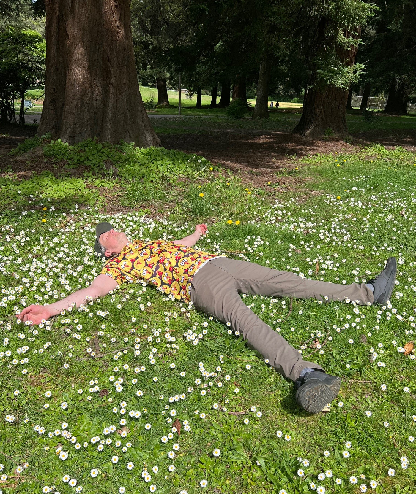

No. 13 Pier Park DGC · Portland, ORPier Park Play-off!
C-Tier · Pier Park DGC · Portland, OR
Pier Park is one of the PNW's absolute best courses. There's many greats, but this section of woods is quite the treat. Competing in MA3 is very fun and offering me great competition. This match was no different, a lot of great scores and I was staying on par for most of the round. Grabbed 3 birds and only 1 bogey, so at 2 under I was tied for first.
I had not played off before, but it's essentially the first person to drop a point loses. My play-off competitor was fierce and we both hit edge of C1 putts to stay in it on the first hole. We went around one, two, and three twice. Then moved to 8, 9, & 10. We both held pars on eight and nine, and ten is where I hit par again, but Sean found a bogey. He had a big shot that missed, and the comebacker bounced off the bucket. I stepped up for the tap in and closed out the round.
A first place victory is always fun, but overall the day was filled with great shots on the card and a lot of fun memories in the woods. I'm pleased to have shot a 933 and it felt like I can do that and better again!
Playing the night before and getting field work in the morning seemed to work pretty well. I'm going to note that routine because it's really nice knowing where the fairway hits are.
My first play-off was thrilling. A high stakes game of disc golf that I had not yet experienced. I'm happy to compete and love winning. LFG.